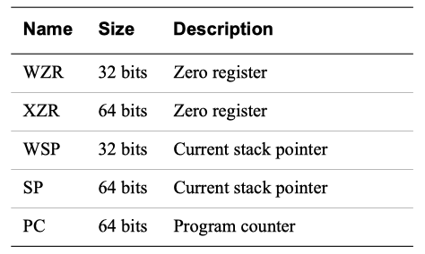
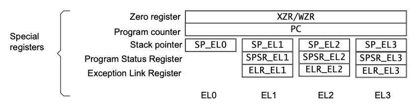
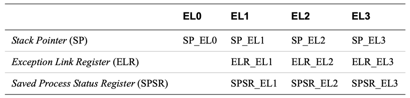
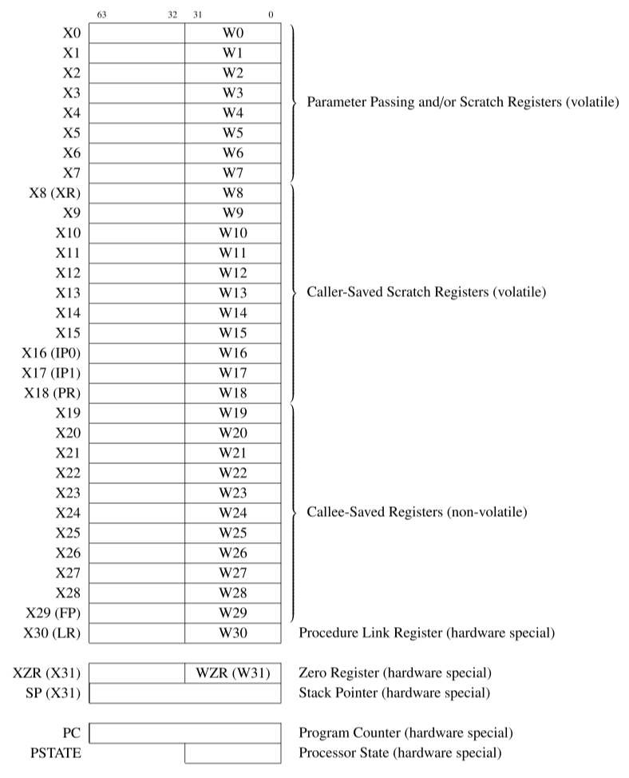
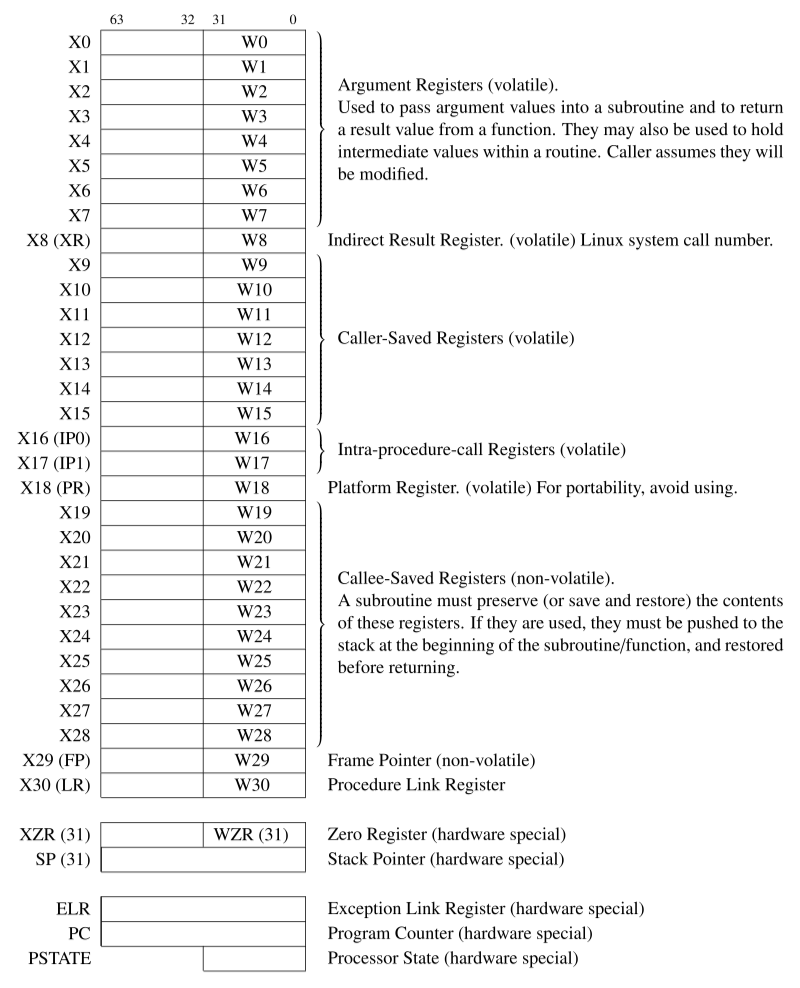

Register file of AArch64
The ISA is a contract between the hardware and the software. It defines the set of instructions and the set of registers that the hardware must support.
The most important components of the CPU are the registers, where data is stored, and the arithmetic and logic unit (ALU), where arithmetic and logical operations are performed on the data.
Arm® processors provide general-purpose and special-purpose registers. Some additional registers are available in privileged execution modes.
Registers which can be used freely are referred to as volatile, and registers which must be preserved or restored before returning are referred to as non-volatile.
isa guide - Registers in AArch64#
Learn the architecture - A64 Instruction Set Architecture Guide
- 6.Registers in AArch64 - general-purpose registers
- 7.Registers in AArch64 - other registers
- 8.Registers in AArch64 - system registers
general-purpose registers#
Most A64 instructions operate on registers. The architecture provides 31 general purpose registers. Each register can be used as a 64-bit X register (X0..X30), or as a 32-bit W register (W0..W30). These are two separate ways of looking at the same register. For example, this register diagram shows that W0 is the bottom 32 bits of X0, and W1 is the bottom 32 bits of X1:
For data processing instructions, the choice of X or W determines the size of the operation. Using X registers will result in 64-bit calculations, and using W registers will result in 32-bit calculations. This example performs a 32-bit integer addition:
This example performs a 64-bit integer addition:
When a W register is written, as seen in the example above, the top 32 bits of the 64-bit register are zeroed.
There is a separate set of 32 registers used for floating point and vector operations. These registers are 128-bit, but like the general-purpose registers, can be accessed in several ways. Bx is 8 bits, Hx is 16 bits and so on to Qx which is 128 bits.
other registers#
Here are some other registers in the A64 that you should know about:
-
The zero registers,
XZRandWZR, always read as 0 and ignore writes. -
You can use the stack pointer (
SP) as the base address for loads and stores. You can also use the stack pointer with a limited set of data-processing instructions, but it is not a regular general purpose register. Armv8-A has multiple stack pointers, and each one is associated with a specific Exception level. WhenSPis used in an instruction, it means the current stack pointer. The guide to the exception model explains how the stack pointer is selected. -
X30is used as the Link Register and can be referred to asLR. Separate registers,ELR_ELx, are used for returning from exceptions. This is discussed in more detail in the guide to the exception model. -
The Program Counter (
PC) is not a general-purpose register in A64, and it cannot be used with data processing instructions. The PC can be read using:
ARM Cortex-A Series Programmer's Guide for ARMv8-A | 4: ARMv8 Registers

The ADR instruction returns the address of a label, calculated based on the current location. Dot (.) means ‘here’, so the shown instruction is returning the address of itself. This is equivalent to reading the PC. Some branch instructions, and some load/store operations, implicitly use the value of the PC.
PC/SP distinction between A32 & A64
In the A32 and T32 instruction sets, the PC and SP are general purpose registers. This is not the case in A64 instruction set.
armasm guide - Registers in AArch64 state#
Arm Compiler armasm User Guide | 5. Overview of AArch64 state
- 5.1 Registers in AArch64 state
- 5.3 Link registers
- 5.4 Stack Pointer register
Arm® processors provide general-purpose and special-purpose registers. Some additional registers are available in privileged execution modes.
In AArch64 state, the following registers are available:
- Thirty-one 64-bit general-purpose registers
X0-X30, the bottom halves of which are accessible asW0-W30. - Four stack pointer registers
SP_EL0,SP_EL1,SP_EL2,SP_EL3. - Three exception link registers
ELR_EL1,ELR_EL2,ELR_EL3. - Three saved program status registers
SPSR_EL1,SPSR_EL2,SPSR_EL3. - One program counter(
PC).
CPSR vs. PSTATE
In AArch64 state, there is no Current Program Status Register (CPSR).
ALU flags stored in PSTATE and needs to be generated by a previous instruction such as a compare (CMP).
The PSTATE register contains bits that indicate the status of the current process, including information about the results of previous operations.
All these registers are 64 bits wide except SPSR_EL1, SPSR_EL2, and SPSR_EL3, which are 32 bits wide.
Most A64 integer instructions can operate on either 32-bit or 64-bit registers. The register width is determined by the register identifier, where W means 32-bit and X means 64-bit. The names Wn and Xn, where n is in the range 0-30, refer to the same register. When you use the 32-bit form of an instruction, the upper 32 bits of the source registers are ignored and the upper 32 bits of the destination register are set to zero.
There is no register named W31 or X31. Depending on the instruction, register 31 is either the stack pointer or the zero register. When used as the stack pointer, you refer to it as SP. When used as the zero register, you refer to it as WZR in a 32-bit context or XZR in a 64-bit context.
ARM Cortex-A Series Programmer's Guide for ARMv8-A | 4: ARMv8 Registers:


ARM 64-Bit Assembly Language#
ARM 64-Bit Assembly Language, Larry D Pyeatt & William Ughetta, 2019
User Program Registers#
3 Load/store and branch instructions - 3.2 AArch64 user registers:
As shown in Fig. 3.2, the AArch64 ISA provides 31 general-purpose registers, which are called X0 through X30. These registers can each store 64 bits of data. To use all 64 bits, they are referred to as x0 through x30 (capitalization is optional). To use only the lower (least significant) 32 bits, they are referred to as w0-w30. Since each register has a 64-bit name and a 32-bit name, we use R0 through R30 to specify a register without specifying the number of bits. For example, when we refer to R12, we are really referring to either x12 or w12.

5 Structured programming - 5.4 Subroutines - 5.4.4 Passing parameters:
These programming conventions are simply a set of rules for how registers should be used. In AArch64 assembly, all of the registers have alternate names that can be used to help remember the rules for using them. Fig. 5.1 shows an expanded view of the AArch64 registers, including their alternate names and conventional use.

volatile vs. non-volatile#
The argument registers, x0-x7, are considered to be volatile, because their contents can change whenever a subroutine is called. If the contents are needed after the subroutine call, then they must be saved either to a non-volatile register or to the stack before the subroutine is called.
Registers x8-x17 are used for holding local variables in a subroutine. These registers are also considered to be volatile. Some of these registers are used for special purposes by the operating system and/or compiler. From the perspective of the programmer who is writing a user-level program, the special purposes are not important.
Registers x19-x28 can also be used for holding local variables. However, before using them, the subroutine must save their contents (usually on the stack) and their contents must be restored before the subroutine exits. These registers are considered non-volatile because their contents will not be changed by a subroutine call. More precisely, the subroutine may use them, but it will restore their contents before it returns.
volatile vs. non-volatile in a nutshell
Registers which can be used freely are referred to as volatile, and registers which must be preserved or restored before returning are referred to as non-volatile.
- registers
x0-x18are volatile, - registers
x19-x29are non-volatile (they can be used, but their contents must be restored to their original value before the function returns), - register
x30can be used by the function, but its contents must be saved so that they can be loaded into the program counter, which will cause the function to return to its caller.